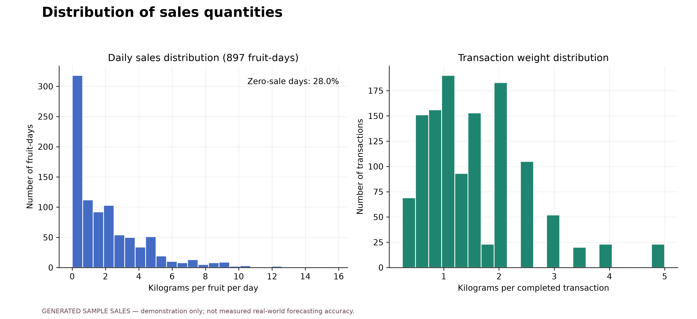
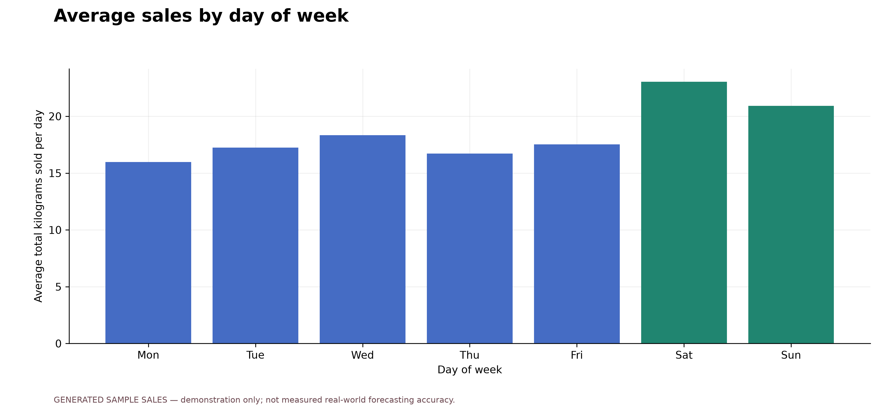
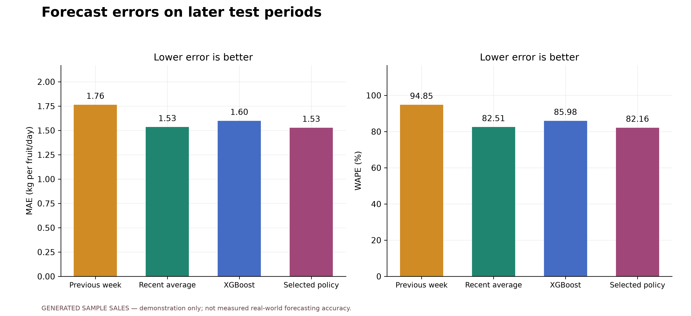
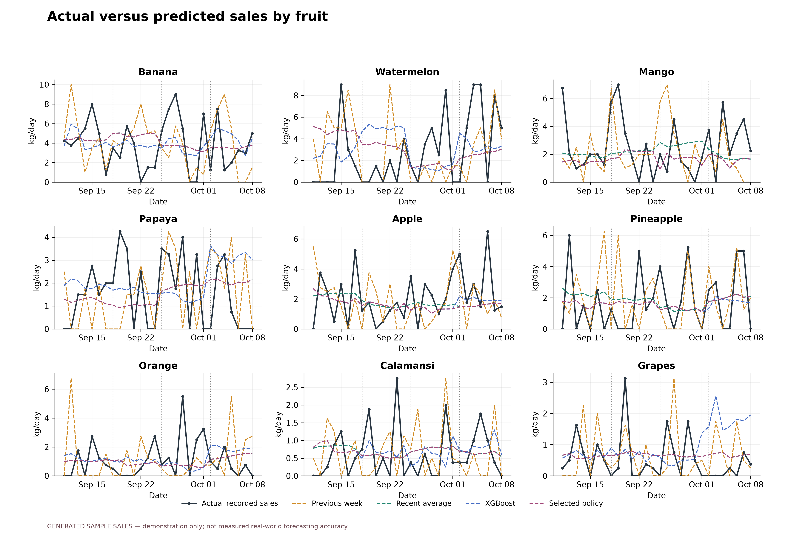
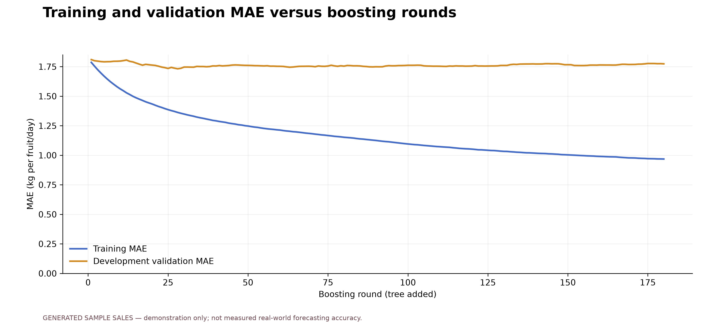
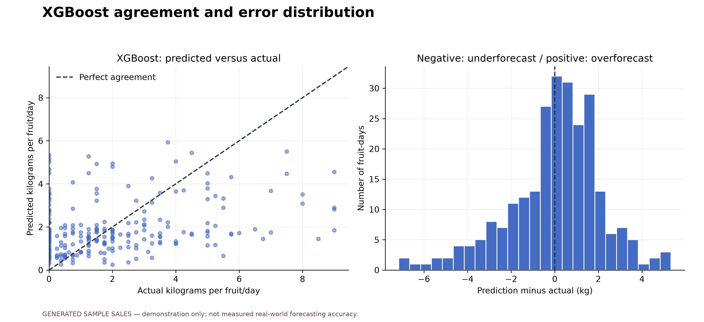
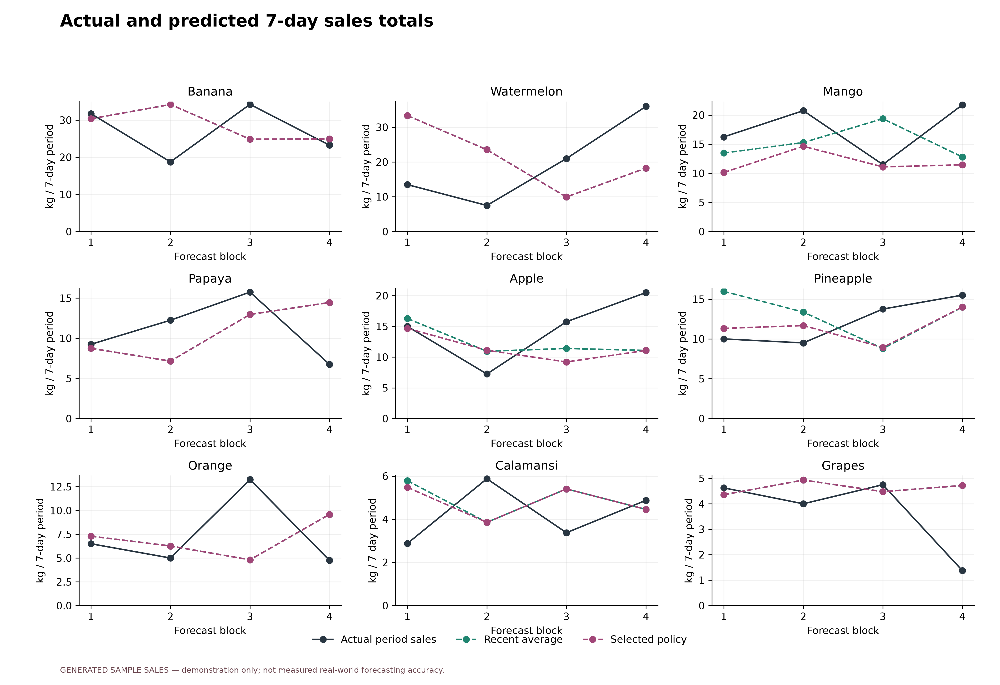
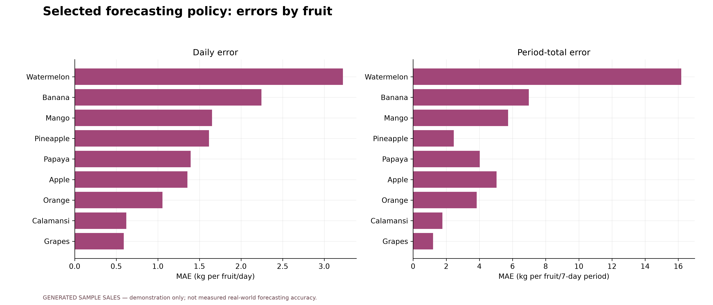
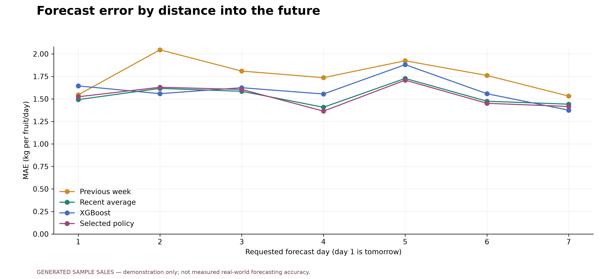

FruityVens: sales analysis and forecast evaluation
GENERATED SAMPLE SALES — demonstration only; not measured real-world forecasting accuracy.
1,241 completed transactions · 9 fruits ·
2026-07-01 to 2026-10-08
Later test period: 2026-09-11 to 2026-10-08, evaluated in
4 successive 7-day forecast blocks. Selected policy chooses
a method for each fruit before each block using earlier sales. Lower errors are better.
Download all figures (PDF) · Prediction data (CSV) ·
Methodology and interpretation · Run metadata
Selection and training are repeated using earlier history before each later block.
The learning curve is a separate one-day-ahead diagnostic. Generated sales cannot establish real vendor accuracy.Does the forecast help sales planning?
Compare daily errors, 7-day total errors, and performance against the recent average.
Positive improvement means smaller daily errors than the average. Tolerance checks need limits chosen with the vendor.
Daily tolerance: Not assessed; period tolerance:
Not assessed; target share within tolerance:
Not assessed.
Expected sales must be compared with usable stock and delivery timing before buying.
Forecast under- or overestimation does not measure actual spoilage or lost sales.
Vendor assessment CSV · Period error CSV ·
Methods chosen before each forecast
Daily sales and revenue

Completed transactions only. Weight and revenue are separate measures; the trailing average summarizes past sales.
Download figure PDF
Distribution of sales quantities

Left: daily fruit sales, including assumed zero-sale dates. Right: basket weights from individual transactions.
Download figure PDF
Average sales by day of week

An exploratory summary of the available period; differences do not establish a causal weekday effect.
Download figure PDF
Forecast errors on later test periods

All methods predict the same fruit-days over 7-day blocks. Selected policy chooses a method per fruit using earlier sales only. Scores use unrounded predictions.
Download figure PDF
Actual versus predicted sales by fruit

Dotted boundaries mark new 7-day forecast blocks. Selection and training use only earlier sales; actual sales within a block never become forecast inputs. Reference actuals are sample values when the dataset is generated.
Download figure PDF
Training and validation MAE versus boosting rounds

One-day-ahead diagnostic: validation features use earlier observed sales. This is not the recursive seven-day test score; the final test period is excluded entirely.
Download figure PDF
XGBoost agreement and error distribution

A point near the diagonal indicates close agreement. Signed errors show the direction of misses; opposite errors do not cancel in MAE or WAPE.
Download figure PDF
Actual and predicted 7-day sales totals

Totals are calculated separately for each fruit and forecast block. Good agreement here can hide errors in daily timing; read alongside the daily plots. These are sales quantities, not recommended purchase quantities.
Download figure PDF
Selected forecasting policy: errors by fruit

Each bar measures later errors after choosing the method on earlier history. Lower is better; an acceptable error depends on the vendor's quantities, replenishment timing, and costs.
Download figure PDF
Forecast error by distance into the future

Compare the requested forecast days on the same test blocks. A predicted bridge day precedes day 1 because the current day's ledger is incomplete. A longer horizon need not have monotonically increasing errors.
Download figure PDF